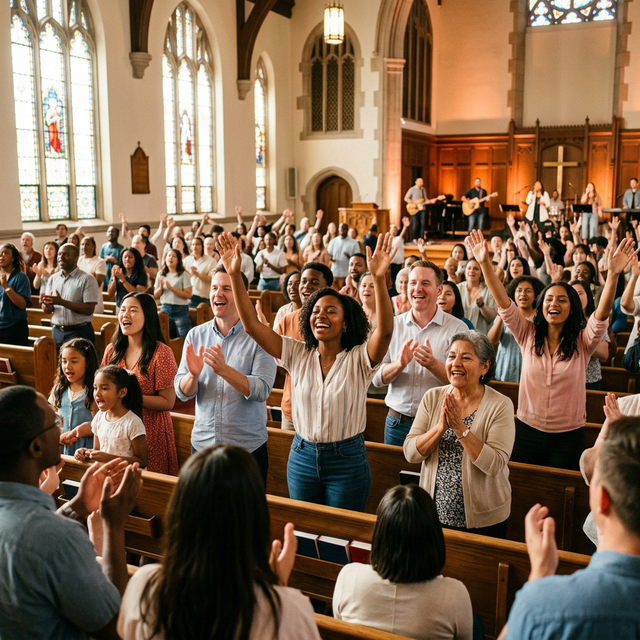
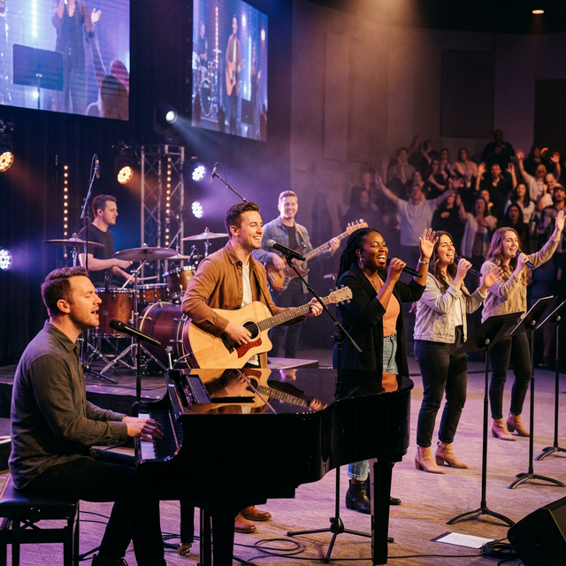

Llevando Luz y Sabor al Mundo
Somos mensajeros de esperanza, una familia que renace en la fe y el amor de Jesucristo.
Una Iglesia Dirigida por Dios
En Ministerio Renacer, creemos que cada vida tiene un propósito divino. Somos una comunidad de las Asambleas de Dios comprometida con la transformación de vidas a través de la Palabra y el Espíritu Santo.
Nuestra misión es alcanzar almas mediante la fe y el compromiso, siendo luz en medio de la oscuridad y sabor en la vida de quienes nos rodean.

Nuestros Ministerios
Encuentra tu lugar y desarrolla los dones que Dios ha puesto en ti.

Alabanza y Adoración
Exaltamos el nombre de Dios con música y corazones dispuestos, creando una atmósfera donde Su presencia se manifiesta.
Escuela Dominical
Formamos a las nuevas generaciones en los valores bíblicos, con alegría, creatividad y amor por la Palabra.

Familia y Comunidad
Fortalecemos los lazos familiares y el discipulado, enfocándonos en la herencia y el propósito de Dios para el hogar.
Galería de Nuestra Comunidad
Capturas de los momentos de fe, alegría y comunión que vivimos juntos.


Videos de Nuestra Iglesia
Vive la experiencia de nuestras reuniones y mensajes desde donde estés.
Mensajes de Vida
Mensajes poderosos del Pastor Lemuel Ortiz para edificar tu fe y transformar tu vida.
Tiempo de Adoración
Entra en la presencia de Dios con nuestro equipo de alabanza, adorándole en espíritu y verdad.
Servicio Dominical
Revive nuestros domingos de celebración llenos del Espíritu Santo y la Palabra de Dios.
¿Quieres ver más contenido? Visítanos en nuestras redes sociales.
Ver más en FacebookRadio Renacer en Línea
Escucha música cristiana, predicaciones y alabanza las 24 horas del día.
📅 Programación Semanal
Únete a Nuestras Reuniones
Domingos de Celebración
9:30 AM – 11:00 AM
Martes de Palabra y Oración
7:30 PM – 8:30 PM
Te esperamos en: Col. San Roberto de Sula, San Pedro Sula, Honduras.
Escríbenos por WhatsAppContacto
- Ubicación: Col. San Roberto de Sula, San Pedro Sula
- WhatsApp: +504 3274-2393
- Pastor: Lemuel Ortiz